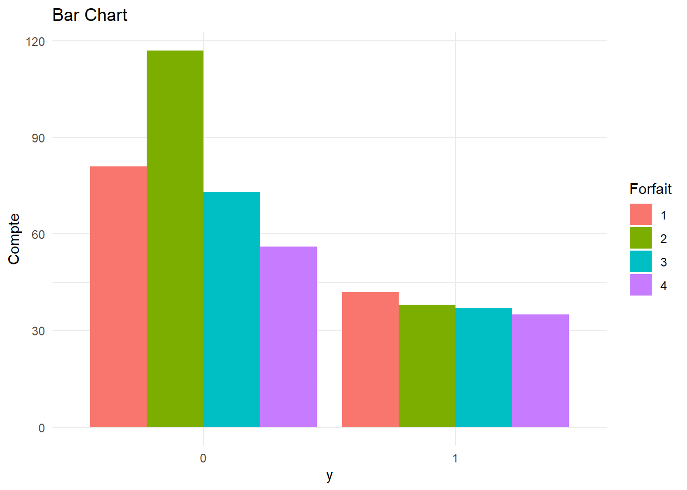

telecom<-read.csv("C:/Users/Fatou/OneDrive - HEC Montréal/PROJET SUPERVISE/THEME 6/Télécommunication.csv",sep=";", header=TRUE
)
telecom$y<-as.factor(telecom$y)
telecom$Sexe<-as.factor(telecom$Sexe)
telecom$Revenu<-as.factor(telecom$Revenu)
telecom$Forfait<-as.factor(telecom$Forfait)
telecom$Facture <- as.numeric(gsub(",", ".", telecom$Facture))Thème 6: La régréssion logistique
0.1 Introduction
La régression logistique est la méthode d’apprentissage la plus populaire après la régression linéaire.
En régression linéaire la variable dépendante (Y) doit être quantitative.
En régression Logistique la variable réponse (Y) ne prend que deux valeurs. Elle est dans ce cas codée sous forme d’une variable binaire(Y=0 ou 1).
Exemples
▪ Un client répond favorablement à une offre promotionnelle (oui ou non).
▪ Un client décide de renouveler son contrat de téléphone cellulaire.
▪ Une entreprise fait faillite. ▪ Un client fait défaut de payement du crédit hypothécaire.
▪ Un employé quitte la compagnie.
▪ Un internaute achète un produit en ligne…
0.2 Objectif
On dispose d’une variable binaire Y (prend 1 en cas d’occurrence de l’évènement et 0 si non occurrence) et d’un ensemble de p prédicteurs X (qualitatifs ou quantitatifs).
Les buts de la régression logistique sont essentiellement les mêmes que la régression linéaire:
Comprendre comment les variables indépendantes influencent la variable dépendante Y: modèle explicatif du comportement de Y.
Prévoir des valeurs de Y futures à partir des variables indépendantes: modèle prédictif.
0.3 Pourquoi la régression linéaire ne marche plus?
Le modèle de régression linéaire a la forme suivante:
\[ E[Y] = \beta_0 + \beta_1 X_1 + \beta_2 X_2 + \dots + \beta_p X_p \]
Quand Y est binaire, nous pouvons montrer que l’espérance de la variable binaire est en fait la probabilité que Y=1.
Le modèle de régression linéaire utilisé avec une variable binaire devient donc :
\[ P(Y = 1) = \cancel{\beta_0 + \beta_1 X_1 + \beta_2 X_2 + \dots + \beta_p X_p} \]
Problème : le côté gauche (P[Y=1]) de ce modèle prend des valeurs entre 0 et 1 tandis que le côté droit peut prendre n’importe quelle valeur entre (−∞ 𝑒𝑡 + ∞). Ce modèle est donc inadéquat et pourrait mener à des prédictions bizarres. Par exemple, le modèle pourrait dire que la probabilité que le client quitte est -0.3 ! Or une probabilité est toujours positive!
0.4 La solution au problème Solution
Pour éviter que les résultats ne fassent pas du sens, on va transformer le côté gauche du modèle afin que les deux côtés puissent prendre les mêmes valeurs
Cet objectif est atteint si on utilise le logit(p): \[ \log \left( \frac{P(Y=1)}{P(Y=0)} \right) = \beta_0 + \beta_1 X_1 + \beta_2 X_2 + \dots + \beta_p X_p \]
Ce modèle est équivalent à \[ \frac{P(Y=1)}{P(Y=0)} = e^{\beta_0 + \beta_1 X_1 + \beta_2 X_2 + \dots + \beta_p X_p} \]
où 𝑃[𝑌=1] / 𝑃[𝑌=0] est un odds (une cote).
La régression logistique est donc basée sur ce modèle au lieu du modèle de régression linéaire.
Un odds ou une cote de 4 veut dire que P[ Y=1] est 4 fois plus grande que P[ Y=0] (donc que P[Y=1]=0.8).
Cote= 2
\[ \frac{P(Y=1)}{P(Y=0)} = 2 \implies P(Y=1) = 2 \times P(Y=0) = 2 \times (1 - P(Y=1)) \]
\[ \Rightarrow P(Y=1) = 0.667 \]
0.5 Complexité du modèle
Le modèle de régression logistique est plus complexe que le modèle de régression linéaire pour les raisons suivantes:
L’algorithme pour estimer les paramètres est plus complexe. Cela peut amener des problèmes de convergence ou des messages d’erreur.
Les coefficients sont plus difficiles à interpréter.
La prévision est délicate (on doit déterminer un point de coupure).
On abordera tous ces points ultérieurement.
0.6 Mise en situation 1
Une compagnie de téléphonie cellulaire cherche à déterminer les facteurs qui augmentent le risque de non renouvellement du contrat des clients.
Le fichier Télécommunication.csv contient 479 observations.
Y: Le client a quitté à la fin de son contrat (0=non, 1=oui).
Sexe: Le sexe du répondant (0=Homme, 1=Femme).
Age: L’âge en année du client.
Revenu: 4 catégories: 1:(0\(,20000\)), 2:(20000\(,50000\)), 3:(50000\(,80000\)), 4:(80000$,∞).
Minutes: Le nombre moyen de minutes d’utilisation du téléphone en un mois.
Facture: Le solde moyen du client.
Forfait: Le type de forfait utilisé par le client vers la fin de son contrat(forfait=1, 2, 3 ou 4).
0.7 Quelques statistiques descriptives
# Calculer les fréquences de Y
freq_y <- table(telecom$y)
# Calculer les pourcentages
pourcentage <- prop.table(freq_y) * 100
pourcentage_cumule <- cumsum(pourcentage)
# Créer un df des résultats
tableau_resume_y <- data.frame(
y = c(names(freq_y), "Total"),
Fréquence = c(freq_y, sum(freq_y)),
Pourcentage = c(round(pourcentage, 1), 100.0),
Pourcentage_cumulé = c(round(pourcentage, 1), NA
))
tableau_resume_y y Fréquence Pourcentage Pourcentage_cumulé
0 0 327 68.3 68.3
1 1 152 31.7 31.7
Total 479 100.0 NA#Tableau croisée y*Sexe
#Calculer les frequences
tableau_y_sexe<-table(telecom$y,telecom$Sexe)
# Calculer les pourcentages de y par sexe
pourcentage_sexe_y <- prop.table(tableau_y_sexe, margin = 2) * 100
# Convertir les tableaux en data.frame
y_sexe_freq <- as.data.frame(tableau_y_sexe)
y_sexe_pourcentage <- as.data.frame(pourcentage_sexe_y)
# Renommer les colonnes
colnames(y_sexe_freq ) <- c("y", "Sexe", "Fréquence")
colnames(y_sexe_pourcentage) <- c("y", "Sexe", "Pourcentage")
# Fusionner les deux tableaux sur y et Sexe
tableau_final_y_sexe <- merge(y_sexe_freq,y_sexe_pourcentage, by = c("y", "Sexe"))
tableau_final_y_sexe y Sexe Fréquence Pourcentage
1 0 0 203 70.48611
2 0 1 124 64.92147
3 1 0 85 29.51389
4 1 1 67 35.07853# Charger le package dplyr
library(dplyr)
# Calculer les statistiques descriptives de minutes en fonction de y
stat_descriptive_minutes <- telecom %>%
group_by(y) %>%
summarise(
N = n(),
Moyenne = round(mean(Minutes, na.rm = TRUE), 2),
Mediane = round(median(Minutes, na.rm = TRUE), 2),
Ecart_type = round(sd(Minutes, na.rm = TRUE), 3),
Minimum = min(Minutes, na.rm = TRUE),
Maximum = max(Minutes, na.rm = TRUE)
)
stat_descriptive_minutes# A tibble: 2 × 7
y N Moyenne Mediane Ecart_type Minimum Maximum
<fct> <int> <dbl> <dbl> <dbl> <int> <int>
1 0 327 281. 244 153. 13 588
2 1 152 338. 284 164. 98 601Dans l’échantillon observé, 31.7% (152/479) des clients n’ont pas renouvelé leur contrat comparativement à 68.3% l’ayant fait.
35.1% des femmes dans l’échantillon (femmes) ont quitté la compagnie comparativement à 29.5% chez les hommes.
Le nombre de minutes moyen chez ceux qui n’ont pas renouvelé le contrat s’élève à 338.48 minutes comparativement à 281.31 chez ceux qui n’ont pas quitté.
#Tableau croisé y*Forfait
#Calculer les frequences
tableau_y_forfait<-table(telecom$y,telecom$Forfait)
# Calculer les pourcentages de y par sexe
pourcentage_forfait_y <- prop.table(tableau_y_forfait, margin = 2) * 100
# Convertir les tableaux en data.frame
y_forfait_freq <- as.data.frame(tableau_y_forfait)
y_forfait_pourcentage <- as.data.frame(pourcentage_forfait_y)
# Renommer les colonnes
colnames(y_forfait_freq ) <- c("y", "Forfait", "Fréquence")
colnames(y_forfait_pourcentage) <- c("y", "Forfait", "Pourcentage")
# Fusionner les deux tableaux sur y et Forfait
tableau_final_y_forfait <- merge(y_forfait_freq,y_forfait_pourcentage, by = c("y", "Forfait"))
tableau_final_y_forfait y Forfait Fréquence Pourcentage
1 0 1 81 65.85366
2 0 2 117 75.48387
3 0 3 73 66.36364
4 0 4 56 61.53846
5 1 1 42 34.14634
6 1 2 38 24.51613
7 1 3 37 33.63636
8 1 4 35 38.46154library(ggplot2)
#BarPlot Forfait
ggplot(data = telecom, aes(x = y, fill = Forfait)) +
geom_bar(position = "dodge") +
labs(
title = "Bar Chart",
x = "y",
y = "Compte",
fill = "Forfait"
) +
theme_minimal()
# Calculer les statistiques descriptives de facture en fonction de y
stat_descriptive_facture <- telecom %>%
group_by(y) %>%
summarise(
N = n(),
Moyenne = round(mean(Facture, na.rm = TRUE), 2),
Mediane = round(median(Facture, na.rm = TRUE), 2),
Ecart_type = round(sd(Facture, na.rm = TRUE), 3),
Minimum = min(Facture, na.rm = TRUE),
Maximum = max(Facture, na.rm = TRUE)
)
stat_descriptive_facture# A tibble: 2 × 7
y N Moyenne Mediane Ecart_type Minimum Maximum
<fct> <int> <dbl> <dbl> <dbl> <dbl> <dbl>
1 0 327 58.9 56.7 28.5 10 140.
2 1 152 64.4 63.7 27.0 19.3 136 Une grande proportion (38.5%), parmi ceux qui détiennent le forfait 4, ne renouvellent pas le contrat.
La facture moyenne chez ceux qui n’ont pas renouvelé le contrat s’élève à 64.37$ comparativement à 58.88$ chez ceux qui n’ont pas quitté.
0.8 Regression logistique avec R
# Ajuster un modèle logistique en R, on utilise glm et on précise family=binomial
#reg_logistique <- glm(y ~ Variable_explicatives, data = data, family = binomial(link="logit"))
#resumé du modèle
#summary(reg_logistique)0.8.1 Attention: Identifiez les variables explicatives qualitatives!
Il ne faut pas oublier de convertir la variable y et les variables qualitatives en facteurs. En R, on utilise as.factor() pour cela. Nous l’avons déjà fait au début afin que la régression logistique interprète correctement les variables catégorielles. Assurez-vous d’effectuer cette transformation avant d’ajuster votre modèle pour que la catégorie de référence soit bien prise en compte.
0.9 Méthode d’estimation des paramètres
Rappel modèle: \[ \frac{P(Y=1)}{P(Y=0)} = e^{\beta_0 + \beta_1 X_1 + \beta_2 X_2 + \dots + \beta_p X_p} \]
Modèle théorique (population): \[ \log \left( \frac{P}{1 - P} \right) = \beta_0 + \beta_1 X_1 + \beta_2 X_2 + \dots + \beta_p X_p \]
Modèle ajusté (échantillon): \[ \log \left( \frac{P}{1 - P} \right) = b_0 + b_1 X_1 + b_2 X_2 + \dots + b_p X_p \]
Pour des valeurs de 𝑋1, 𝑋2, … 𝑋𝑝 données, la probabilité estimée de l’occurrence de l’événement :
\[ \hat{p}(Y) = \frac{1}{1 + e^{-(b_0 + b_1 X_1 + b_2 X_2 + \dots + b_p X_p)}} \]
0.9.1 Le choix du point de coupure
Le modèle ajusté permet ainsi d’obtenir des prévision de Y en spécifiant un point de coupure (seuil): \[ \hat{p} = \frac{1}{1 + e^{-(b_0 + b_1 X_1 + b_2 X_2 + \dots + b_p X_p)}} \]
Par défaut, R choisit un seuil de 0.5.
Ce point de coupure peut être changé si on n’accorde pas le même poids au fait de faussement classer un 0 ou de mal classer un 1
\[ \text{si } \hat{p} < 0.5 \text{ alors il est plus probable que } \hat{Y} = 0 \]
\[ \text{si } \hat{p} > 0.5 \text{ alors il est plus probable que } \hat{Y} = 1 \]
#Choisir un point de coupure manuellemement
# Prédire les probabilités
#telecom$prob_pred <- predict(reg_logistique, type = "response")
#coupure <- 0.4 # Exemple on place le seuil à 40%
#telecom$y_pred_ <- ifelse(telecom$prob_pred > coupure, 1, 0)0.10 Méthode d’estimation des paramètres (suite)
Pour estimer les paramètres du modèle, la méthode la plus utilisée est celle du Maximum de vraisemblance ML. Cette méthode consiste à trouver les valeurs des paramètres qui rendent les données les plus probables possibles, c.à.d qui maximisent la vraisemblance.
On dérive de cette méthode une quantité (-2LL) qui traduit en quelque sorte la somme des carrés des résidus (SSE) en régression linéaire. Lorsqu’on ajoute une variable explicative au modèle, on s’attend à ce que le SSE diminue.
(-2LL) traduit donc la portion non expliquée du modèle.
On utilise règle générale la différence entre (-2LL) de deux modèles pour statuer sur la significativité de l’amélioration marginale apportée par l’ajout de variables (supplémentaires). C’est en quelque sorte équivalent à un test sur un sous ensemble de paramètres.
Si on ajuste des modèles hiérarchiques, on peut prouver que la quantité suivante: Différence (ratio de vraisemblance) = [-2LL(modèle réduit) - ( -2LL(modèle complet))] = 2LL (modèle complet) - 2LL (modèle réduit) suit une 𝜒2 à 𝑘𝑑 𝑑𝑒𝑔𝑟é𝑠 𝑑𝑒 𝑙𝑖𝑏𝑒𝑟𝑡é 𝑜ù 𝑘𝑑 = (𝑘𝑐𝑜𝑚𝑝𝑙𝑒𝑡 − 𝑘𝑟é𝑑𝑢𝑖𝑡) 𝑜ù 𝑘𝑖 : 𝑟𝑒𝑝𝑟é𝑠𝑒𝑛𝑡𝑒 𝑙𝑒 𝑛𝑜𝑚𝑏𝑟𝑒 𝑑𝑒 𝑝𝑎𝑟𝑎𝑚è𝑡𝑟𝑒𝑠 𝑑𝑎𝑛𝑠 𝑢𝑛 𝑚𝑜𝑑è𝑙𝑒 𝑖. 𝑘𝑐𝑜𝑚𝑝𝑙𝑒𝑡 > 𝑘𝑟é𝑑𝑢𝑖𝑡
0.11 Modèle 1: cas d’une variable explicative qualitative « Sexe »
\[ \log \left( \frac{p}{1 - p} \right) = \beta_0 + \beta_1 \times \text{Sexe} \]
Ajustons un modèle de régression logistique en utilisant uniquement le « Sexe » comme
# ajuster régression logistique avec aucune variable explicative
modele_simple <- glm(y ~ 1 , data = telecom, family = binomial(link="logit"))
# ajuster régression logistique avec Sexe
modele_sexe <- glm(y ~ Sexe, data = telecom, family = binomial(link="logit"))
#Résumé du modèle
summary(modele_simple)
Call:
glm(formula = y ~ 1, family = binomial(link = "logit"), data = telecom)
Coefficients:
Estimate Std. Error z value Pr(>|z|)
(Intercept) -0.76608 0.09817 -7.804 6.01e-15 ***
---
Signif. codes: 0 '***' 0.001 '**' 0.01 '*' 0.05 '.' 0.1 ' ' 1
(Dispersion parameter for binomial family taken to be 1)
Null deviance: 598.6 on 478 degrees of freedom
Residual deviance: 598.6 on 478 degrees of freedom
AIC: 600.6
Number of Fisher Scoring iterations: 4summary(modele_sexe)
Call:
glm(formula = y ~ Sexe, family = binomial(link = "logit"), data = telecom)
Coefficients:
Estimate Std. Error z value Pr(>|z|)
(Intercept) -0.8706 0.1292 -6.738 1.6e-11 ***
Sexe1 0.2550 0.1992 1.280 0.201
---
Signif. codes: 0 '***' 0.001 '**' 0.01 '*' 0.05 '.' 0.1 ' ' 1
(Dispersion parameter for binomial family taken to be 1)
Null deviance: 598.60 on 478 degrees of freedom
Residual deviance: 596.96 on 477 degrees of freedom
AIC: 600.96
Number of Fisher Scoring iterations: 40.11.1 Test du rapport de vraisemblance
𝐻0: 𝑎𝑢𝑐𝑢𝑛𝑒 𝑎𝑚e𝑙𝑖𝑜𝑟𝑎𝑡𝑖𝑜𝑛 𝑑′𝑎𝑗𝑢𝑠𝑡𝑒𝑚𝑒𝑛𝑡 𝑠𝑢𝑖𝑡𝑒 à 𝑙′𝑎𝑗𝑜𝑢𝑡 𝑑𝑒 𝑙𝑎 𝑣𝑎𝑟𝑖𝑎𝑏𝑙𝑒 𝑆𝑒𝑥𝑒
𝐻1: 𝑙𝑎 𝑣𝑎𝑟𝑖𝑎𝑏𝑙𝑒 𝑠𝑒𝑥𝑒 𝑐𝑜𝑛𝑡𝑟𝑖𝑏𝑢𝑒 à 𝑙′𝑎𝑚é𝑙𝑖𝑜𝑟𝑎𝑡𝑖𝑜𝑛 𝑑𝑒 𝑙′𝑎𝑗𝑢𝑠𝑡𝑒𝑚𝑒𝑛𝑡 𝑑𝑢 𝑚𝑜𝑑è𝑙𝑒
# Effectuer le test du rapport de vraisemblance
anova(modele_simple, modele_sexe, test = "Chisq")Analysis of Deviance Table
Model 1: y ~ 1
Model 2: y ~ Sexe
Resid. Df Resid. Dev Df Deviance Pr(>Chi)
1 478 598.60
2 477 596.96 1 1.6328 0.2013summary(modele_sexe)
Call:
glm(formula = y ~ Sexe, family = binomial(link = "logit"), data = telecom)
Coefficients:
Estimate Std. Error z value Pr(>|z|)
(Intercept) -0.8706 0.1292 -6.738 1.6e-11 ***
Sexe1 0.2550 0.1992 1.280 0.201
---
Signif. codes: 0 '***' 0.001 '**' 0.01 '*' 0.05 '.' 0.1 ' ' 1
(Dispersion parameter for binomial family taken to be 1)
Null deviance: 598.60 on 478 degrees of freedom
Residual deviance: 596.96 on 477 degrees of freedom
AIC: 600.96
Number of Fisher Scoring iterations: 4Différence (ratio de vraisemblance) = [-2LL(modèle réduit) - ( - 2LL(modèle complet))] = 2LL (modèle complet) - 2LL (modèle réduit) suit une 𝜒2 à 𝑘𝑑 𝑑𝑒𝑔𝑟é𝑠 𝑑𝑒 𝑙𝑖𝑏𝑒𝑟𝑡é 𝑜ù 𝑘𝑑 = (𝑘𝑐𝑜𝑚𝑝𝑙𝑒𝑡 − 𝑘𝑟é𝑑𝑢𝑖𝑡) 𝑜ù 𝑘𝑖 : 𝑟𝑒𝑝𝑟é𝑠𝑒𝑛𝑡𝑒 𝑙𝑒 𝑛𝑜𝑚𝑏𝑟𝑒 𝑑𝑒 𝑝𝑎𝑟𝑎𝑚è𝑡𝑟𝑒𝑠 𝑑𝑎𝑛𝑠 𝑢𝑛 𝑚𝑜𝑑è𝑙𝑒 𝑖. (𝑘𝑐𝑜𝑚𝑝𝑙𝑒𝑡 > 𝑘𝑟é𝑑𝑢𝑖𝑡)
P=value = 0.201>5% donc au seuil 5%, on ne rejette pas H0. l’ajout de la variable sexe n’améliore pas l’ajustement du modèle réduit.
0.11.2 La pseudo performance du modèle
En régression logistique, nous n’avons pas de mesure de performance équivalente au coefficient de détermination 𝑅2 de la régression linéaire. Néanmoins, les valeurs de Cox& Snell R Square et Nagelkerke R Square donnent approximativement une indication sur la portion de la variation observée dans Y qui est expliquée par le modèle.
#Installer la bibliothèque
install.packages("rcompanion", repos = "https://cran.r-project.org")le package 'rcompanion' a été décompressé et les sommes MD5 ont été vérifiées avec succés
Les packages binaires téléchargés sont dans
C:\Users\Fatou\AppData\Local\Temp\RtmpInrA5N\downloaded_packageslibrary(rcompanion)
# Calcul des pseudo R²
nagelkerke(modele_sexe)$Models
Model: "glm, y ~ Sexe, binomial(link = \"logit\"), telecom"
Null: "glm, y ~ 1, binomial(link = \"logit\"), telecom"
$Pseudo.R.squared.for.model.vs.null
Pseudo.R.squared
McFadden 0.00272778
Cox and Snell (ML) 0.00340304
Nagelkerke (Cragg and Uhler) 0.00477015
$Likelihood.ratio.test
Df.diff LogLik.diff Chisq p.value
-1 -0.81642 1.6328 0.20131
$Number.of.observations
Model: 479
Null: 479
$Messages
[1] "Note: For models fit with REML, these statistics are based on refitting with ML"
$Warnings
[1] "None"Cox and Snell=0.003 er Nagelkerke=0.005 ainsi, le modèle 1 explique entre 0.3% à 0.5% de la variabilité
observée.
0.11.3 Test d’hypothèse pour un paramètre
𝐻0: 𝛽𝑐𝑜𝑛𝑠𝑡𝑎𝑛𝑡𝑒 = 0 vs. 𝐻1: 𝛽𝑐𝑜𝑛𝑠𝑡𝑎𝑛𝑡𝑒 ≠ 0 P-value < 0.05. Au niveau 5%, on rejette H0. la constante est statistiquement significative.
𝐻0: 𝛽𝑠𝑒𝑥𝑒 = 0 vs. 𝐻1: 𝛽𝑠𝑒𝑥𝑒 ≠ 0 P-value=0.201 > 0.05 (même p-value page 20). Au niveau 5%, on ne rejette pas H0. la variable n’est pas statistiquement significative
Les p-value de ces tests sont données dans ce tableau.
summary(modele_sexe)
Call:
glm(formula = y ~ Sexe, family = binomial(link = "logit"), data = telecom)
Coefficients:
Estimate Std. Error z value Pr(>|z|)
(Intercept) -0.8706 0.1292 -6.738 1.6e-11 ***
Sexe1 0.2550 0.1992 1.280 0.201
---
Signif. codes: 0 '***' 0.001 '**' 0.01 '*' 0.05 '.' 0.1 ' ' 1
(Dispersion parameter for binomial family taken to be 1)
Null deviance: 598.60 on 478 degrees of freedom
Residual deviance: 596.96 on 477 degrees of freedom
AIC: 600.96
Number of Fisher Scoring iterations: 4R fournit une estimation du paramètre 𝛽𝑠𝑒𝑥𝑒 = 0.255.
Rappel: Modèle ajusté: \[ \hat{p}(Y) = \frac{1}{1 + e^{-(-0.871 + 0.255 \cdot Sexe)}} \]
0.11.4 D’où vient le odds ratio (rapport de cote)?
Rappel: Modèle ajusté: \[ \hat{p}(Y) = \frac{1}{1 + e^{-(-0.871 + 0.255 \cdot Sexe)}} \]
Calcul du rapport de cote (odds ratio) (à titre indicatif seulement)
| Sexe | Probabilité.de.ne.pas.renouveler.le.contrat | Probabilité.de.renouveler.le.contrat | Odds..Cote. |
|---|---|---|---|
| Femme | P(Y=1 | sexe=1) | P(Y=0 | sexe=1) | |
| Homme | P(Y=1 | sexe=0) | P(Y=0 | sexe=0) | |
| Rapport de cote d’une Femme vs un Homme | 1.29046162 |
\[ \textbf{Exemple de calcul:} \quad P(Y=1 | sexe=1) = \frac{1}{1 + e^{-(-0.871 + 0.255 \cdot 1)}} \quad \text{et} \quad P(Y=0 | sexe=1) = 1 - P(Y=1 | sexe=1) \]
\[ \textbf{Cote (pour femme)} = \frac{P(Y=1 | sexe = 1)}{P(Y=0 | sexe = 1)} = \frac{0.3507}{0.6493} = 0.5401 \]
\[ \textbf{Rapport de cote} = \frac{\text{cote femme}}{\text{cote homme}} = \frac{0.54}{0.41} = 1.29 \]
0.11.5 Interprétation du paramètre de la variable Sexe
odds ratio = odds aprés une augmentation d′une unité de la variable explicative / odds de base = eβ 24
Interprétation
➢ le risque d’interrompre le contrat est 1.29 fois plus élevé chez les femmes que chez les hommes. La cote des femmes est 1.29*cote des hommes.
➢ Le risque de non renouvellement est multiplié par 1.29 s’il s’agit d’une femme, ou bien, le risque de non renouvellement est augmenté de 29% s’il s’agit d’une femme. Mais Attention ce paramètre est statistiquement non significatif!
Si le rapport de cote (odds ratio) = 1; le fait d’interrompre le contrat est indépendant du sexe.
Si le rapport de cote(odds ratio) >1; le non renouvellement du contrat est plus fréquent chez les femmes (𝛽𝑠𝑒𝑥𝑒 > 0).Il y a une association positive entre X et P(y=1).
Si le rapport de cote (odds ratio) <1; le non renouvellement du contrat est plus fréquent chez les hommes(𝛽𝑠𝑒𝑥𝑒 < 0).Il y a une association négative entre X et P(y=1).
Intervalle de confiance
IC (95%) : [0.873; 1.907] : 1 est une possibilité de l’intervalle ( on ne rejette pas H0). La variable sexe ne contribue pas à expliquer significativement la probabilité de non renouvellement
0.12 Modèle 2: Cas d’une variable explicative quantitative «Minutes»
\[ \log \left( \frac{p}{1 - p} \right) = \beta_0 + \beta_1 \times \text{Minutes} \]
Ajustons un modèle de régression logistique en utilisant uniquement « Minutes » comme variable
# ajuster régression logistique avec Minutes
modele_minutes <- glm(y ~ Minutes, data = telecom, family = binomial(link="logit"))
summary(modele_minutes)
Call:
glm(formula = y ~ Minutes, family = binomial(link = "logit"),
data = telecom)
Coefficients:
Estimate Std. Error z value Pr(>|z|)
(Intercept) -1.471251 0.223351 -6.587 4.48e-11 ***
Minutes 0.002278 0.000626 3.639 0.000274 ***
---
Signif. codes: 0 '***' 0.001 '**' 0.01 '*' 0.05 '.' 0.1 ' ' 1
(Dispersion parameter for binomial family taken to be 1)
Null deviance: 598.60 on 478 degrees of freedom
Residual deviance: 585.13 on 477 degrees of freedom
AIC: 589.13
Number of Fisher Scoring iterations: 4# Effectuer le test du rapport de vraisemblance
anova(modele_simple,modele_minutes, test = "Chisq")Analysis of Deviance Table
Model 1: y ~ 1
Model 2: y ~ Minutes
Resid. Df Resid. Dev Df Deviance Pr(>Chi)
1 478 598.60
2 477 585.13 1 13.464 0.0002432 ***
---
Signif. codes: 0 '***' 0.001 '**' 0.01 '*' 0.05 '.' 0.1 ' ' 1# Calcul des pseudo R²
nagelkerke(modele_minutes)$Models
Model: "glm, y ~ Minutes, binomial(link = \"logit\"), telecom"
Null: "glm, y ~ 1, binomial(link = \"logit\"), telecom"
$Pseudo.R.squared.for.model.vs.null
Pseudo.R.squared
McFadden 0.0224926
Cox and Snell (ML) 0.0277171
Nagelkerke (Cragg and Uhler) 0.0388519
$Likelihood.ratio.test
Df.diff LogLik.diff Chisq p.value
-1 -6.732 13.464 0.00024319
$Number.of.observations
Model: 479
Null: 479
$Messages
[1] "Note: For models fit with REML, these statistics are based on refitting with ML"
$Warnings
[1] "None"H0: 𝛽𝑚𝑖𝑛𝑢𝑡𝑒𝑠 = 0 vs H1: 𝛽𝑚𝑖𝑛𝑢𝑡𝑒𝑠 ≠ 0
P-value=0.00 on rejette H0. La variable « Minutes » contribue à expliquer la probabilité d’occurrence de l’événement.
0.12.1 Interprétation du coefficient estimé de la variable «Minutes»
Interprétation
𝒃𝒎𝒊𝒏𝒖𝒕𝒆𝒔 = 𝟎. 𝟎𝟎𝟐; p-value <5%; il y a donc une association positive et significative entre le nombre moyen de minutes d’utilisation du téléphone en un mois et la probabilité de quitter.
Lorsque le nombre moyen de minutes par mois augmente de 1, le rapport de cote (odds ratio) est multipliée par 𝑒0.002 = 1.002.
Lorsque le nombre moyen de minutes par mois augmente de 1, le rapport de cote augmente de 0.2% (1.002-1).
Si le nombre moyen de minutes par mois augmente de 1, le risque de ne pas renouveler le contrat augmente.
Intervalle de confiance (95%)
On estime au niveau de confiance 95% que le vrai rapport de cote dans la population se situe entre 1.001 et 1.004.
0.12.2 Test d’ajustement du modèle
Le test de permet de tester l’ajustement du modèle aux données de l’échantillon. Hosmer-Lemeshow Goodness of Fit.
#Installer la bibliotheque
#install.packages("ResourceSelection")
library(ResourceSelection)
hoslem.test(modele_minutes$y, fitted(modele_minutes), g = 10)
Hosmer and Lemeshow goodness of fit (GOF) test
data: modele_minutes$y, fitted(modele_minutes)
X-squared = 32.084, df = 8, p-value = 8.997e-05Les hypothèses du test de Hosmer-Lemeshow Goodness of Fit sont les suivantes:
H0: 𝐿𝑒 𝑚𝑜𝑑è𝑙𝑒 𝑎𝑗𝑢𝑠𝑡𝑒 𝑏𝑖𝑒𝑛 𝑙𝑒𝑠 𝑑𝑜𝑛𝑛é𝑒𝑠 vs. H1: 𝑙𝑒 𝑚𝑜𝑑è𝑙𝑒 𝑛′𝑎𝑗𝑢𝑠𝑡𝑒 𝑝𝑎𝑠 𝑏𝑖𝑒𝑛 𝑙𝑒𝑠 𝑑𝑜𝑛𝑛é𝑒𝑠
Si H0 est vraie, la statistique HL (Hosmer-Lemshow) suit une Khi-deux à 8 degrés de liberté.
Comme la P-value=0 dans ce cas (Modèle avec Minutes seulement), on rejette H0. Il n’y a donc pas assez d’évidence pour affirmer que le modèle ajuste bien les données.
Si le modèle n’est pas bon, on doit chercher à l’améliorer (exemple: rajouter d’autres variables au modèle).
0.12.3 L’idée du test d’ajustement Hosmer-Lemeshow (à titre indicatif)
Classer par ordre croissant les probabilités estimées. 2) Diviser l’échantillon en 10 groupes de tailles approximativement égales.
Calculer la somme des probabilités observées et celles estimées pour chaque groupe.
Calculer la statistique:
\[ \text{Khi-deux du test HL} = \sum_{i=1}^{10} \frac{n_i \cdot (\text{prob observée}_i - \text{prob estimée}_i)^2}{\text{prob estimée}_i \cdot (n_i - \text{prob estimée}_i)} \]
\[ HL = \frac{48 \times (5 - 10.425)^2}{10.425 \times (48 - 10.425)} + \dots + \frac{44 \times (26 - 19.753)^2}{19.753 \times (44 - 19.753)} = 29.107 \]
0.13 Modèle 3 : modèle avec toutes les variables explicatives
*Forfait 1: catégorie de référence.
• Revenu 1: catégorie de référence ((0\(,20000\)).
• Homme: catégorie de référence.
# ajuster régression logistique avec toutes les variables
modele_complet <- glm(y ~ Sexe+Age+Revenu+Minutes+Facture+Forfait, data = telecom, family = binomial(link="logit"))
summary(modele_complet)
Call:
glm(formula = y ~ Sexe + Age + Revenu + Minutes + Facture + Forfait,
family = binomial(link = "logit"), data = telecom)
Coefficients:
Estimate Std. Error z value Pr(>|z|)
(Intercept) -1.501746 0.555174 -2.705 0.00683 **
Sexe1 0.278993 0.217839 1.281 0.20029
Age -0.030816 0.007375 -4.178 2.94e-05 ***
Revenu2 0.167588 0.310278 0.540 0.58911
Revenu3 -0.487214 0.302354 -1.611 0.10709
Revenu4 -0.134965 0.294320 -0.459 0.64655
Minutes 0.011656 0.001887 6.175 6.60e-10 ***
Facture 0.012187 0.007244 1.682 0.09248 .
Forfait2 -1.495148 0.340324 -4.393 1.12e-05 ***
Forfait3 -4.376304 0.758593 -5.769 7.98e-09 ***
Forfait4 -4.237469 0.822642 -5.151 2.59e-07 ***
---
Signif. codes: 0 '***' 0.001 '**' 0.01 '*' 0.05 '.' 0.1 ' ' 1
(Dispersion parameter for binomial family taken to be 1)
Null deviance: 598.60 on 478 degrees of freedom
Residual deviance: 522.51 on 468 degrees of freedom
AIC: 544.51
Number of Fisher Scoring iterations: 4# Effectuer le test du rapport de vraisemblance
anova(modele_simple,modele_complet, test = "Chisq")Analysis of Deviance Table
Model 1: y ~ 1
Model 2: y ~ Sexe + Age + Revenu + Minutes + Facture + Forfait
Resid. Df Resid. Dev Df Deviance Pr(>Chi)
1 478 598.60
2 468 522.51 10 76.081 2.929e-12 ***
---
Signif. codes: 0 '***' 0.001 '**' 0.01 '*' 0.05 '.' 0.1 ' ' 1# Calcul des pseudo R²
nagelkerke(modele_complet)$Models
Model: "glm, y ~ Sexe + Age + Revenu + Minutes + Facture + Forfait, binomial(link = \"logit\"), telecom"
Null: "glm, y ~ 1, binomial(link = \"logit\"), telecom"
$Pseudo.R.squared.for.model.vs.null
Pseudo.R.squared
McFadden 0.127100
Cox and Snell (ML) 0.146862
Nagelkerke (Cragg and Uhler) 0.205861
$Likelihood.ratio.test
Df.diff LogLik.diff Chisq p.value
-10 -38.041 76.081 2.9295e-12
$Number.of.observations
Model: 479
Null: 479
$Messages
[1] "Note: For models fit with REML, these statistics are based on refitting with ML"
$Warnings
[1] "None"hoslem.test(modele_complet$y, fitted(modele_complet), g = 10)
Hosmer and Lemeshow goodness of fit (GOF) test
data: modele_complet$y, fitted(modele_complet)
X-squared = 11.115, df = 8, p-value = 0.19530.13.1 Interprétation des coefficients estimés
Chaque coefficient estimé représente l’effet de la variable correspondante sur le Logit (y) une fois que les autres variables sont dans le modèle.
Âge (béta = -0.031): selon le modèle ajusté, pour chaque augmentation d’une année de l’âge, le rapport de côte (odds ratio) est multiplié par 0.970 (exp(-0.031)) toutes choses étant égales par ailleurs.
Alternativement: pour chaque augmentation de 1 an de l’âge, le rapport de côte diminue de 3% (1-0.970) TCEÉPA.
Minutes (béta =0.012): selon le modèle ajusté, si le nombre moyen de minutes par mois augmente de 1, le rapport de côte est multiplié par 1.012 TCEÉPA.
Alternativement: pour chaque augmentation de 1 du nombre de minutes moyen par mois, le rapport de côte augmente de 1.2% (1.012 -1) TCÉEPA.
La variable Revenu (introduite par le biais de 3 variables indicatrices) est non significative en présence de toutes les autres variables dans le modèle.
La variable Forfait est significative en présence de toutes les autres variables dans le modèle.
Forfait (1) (bêta=-1,495) :
Si tout demeure constant, on estime que les clients qui utilisent le forfait 2 voient leur rapport de côte multiplié par 0.224 (=exp(-1.495)) par rapport à ceux qui utilisent le forfait 1 (référence).
0.14 Table de classification
La table de classification renseigne sur la capacité du modèle à prédire correctement un état (le client quitte/ le client ne quitte pas). (le point de coupure choisi=0.5 )
La table nous permet de calculer le taux de bonne classification.
▪ Le taux de bonne classification= 𝑁𝑜𝑚𝑏𝑟𝑒 𝑑′𝑜𝑏𝑠𝑒𝑟𝑣𝑎𝑡𝑖𝑜𝑛𝑠 𝑏𝑖𝑒𝑛 𝑐𝑙𝑎𝑠𝑠é𝑠 / 𝑡𝑜𝑡𝑎𝑙 = 287+54 /479 = 71.2%
▪ Le taux de mauvaise classification= (1- taux de bonne classification)= 100% -71.2%= 28.8%
# Générer les probabilite
telecom$proba <- predict(modele_complet, type = "response")
#On choisi un seuil de 0,5 et on genere les predictions 0 ou 1
telecom$prediction<- ifelse(telecom$proba>0.5,1,0)
#O cree un table de classification
table_classification<-table(telecom$y,telecom$prediction)
table_classification
0 1
0 287 40
1 98 54#On calcul la specificite et la sensibilite
Specificite<- 54/(54+98)*100
Sensibilite<- 287/(287+40)*100
Specificite[1] 35.52632Sensibilite[1] 87.76758La proportion de vrais négatifs, appelée spécificité, est de 87.8%,
La proportion de vrais positifs, appelée sensibilité, est de 35.5%.
0.15 Mise en situation 2
Sur la base du fichier de données « faillite.csv », on se propose d’analyser, au moyen d’une régression logistique, la faillite et survie de firmes en fonction de quatre ratios financiers.
Les variables disponibles sont les suivantes:
𝑌 : 1 si faillite, 0 si survie.
𝑋1: Flux de trésorerie/ Dette totale.
𝑋2: Résultat net/ Actif.
𝑋3: Actif à court terme/ Dette à court terme.
𝑋4: Actif à court terme/ Ventes.
#faillite<-read.csv("C:/Users/Fatou/OneDrive - HEC Montréal/PROJET SUPERVISE/THEME 6/faillite.csv",sep=";", header=TRUE
#)0.15.1 Questions
Ajustez un modèle de régression logistique simple de Y sur chaque variable explicative. Quelle est l’estimation de l’équation de la régression logistique obtenue? Interprétez les estimations obtenues en termes de « Odds ratio ». Ordonnez la performance de ces 4 modèles.
Effectuez une régression logistique de Y sur tous les ratios financiers 𝑿𝒋 (modèle 1). Quelle est l’estimation de l’équation de la régression logistique obtenue? Interprétez les estimations obtenues en termes de « Odds ratio ».
Identifiez les variables significatives dans le modèle 1. Comparez avec les résultats en 1).
4. En utilisant un niveau de 5%, est-ce que la régression est globalement significative dans le modèle 1?
Avez-vous des réticences par rapport à l’une ou l’autre de vos interprétations du modèle 1? Si oui, expliquez ce phénomène.
Quelle proportion de la variation de la variable Y est expliquée par le modèle 1?
Que pouvez-vous dire sur l’ajustement du modèle 1?
Que pouvez-vous dire sur le pouvoir de discrimination du modèle 1?
Effectuez une procédure de sélection de variables pour obtenir le meilleur modèle de régression logistique.
Discutez le pouvoir discriminant du modèle retenu à la question précédente à l’aide de la table de classification